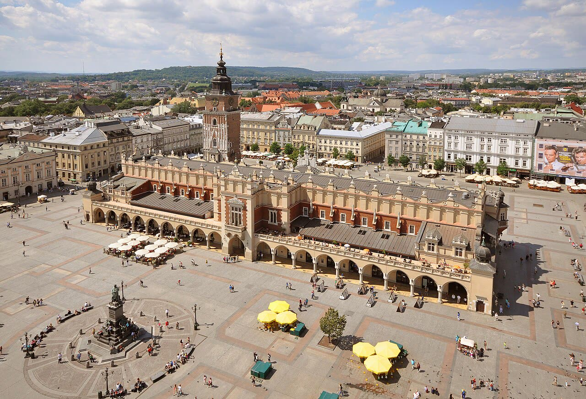

Cracovia, uomo spara sui passanti in piazza: sei vittime (bilancio provvisorio)
Il coro regge
La polizia ha fatto il suo mestiere e la pista del terrorismo va presa sul serio, ma un movente ufficiale ancora non c'è.
Redazione Contrappunto · aggiornato il 07.11.2026


Cracovia è la seconda città della Polonia, con oltre 800 mila abitanti, a circa 250 chilometri dalla capitale Varsavia (DW), e la sua prima meta turistica: più di 16 milioni di visitatori l'anno scorso (Notes from Poland). Il cuore è la piazza del Mercato, Rynek Główny, nel centro storico protetto dall'UNESCO, chiusa alle auto. Sabato 7 novembre, verso le 15, un uomo ci è entrato in macchina e ha sparato sui passanti. In Polonia la violenza con armi da fuoco è rarissima e una sparatoria di massa così non ha precedenti, scrive Notes from Poland: il paese ha uno dei tassi più bassi d'Europa di armi detenute, anche se l'anno scorso ha rilasciato il numero record di 50.709 licenze. Quel giorno in città c'era anche una manifestazione contro il governo di Donald Tusk.
Vedi di più: 4 parole spiegate, cosa si racconta
Cosa si raccontaAgenzie e giornali, polacchi e italiani, raccontano la stessa scena: un uomo solo che spara a caso da un'auto, la polizia che lo ferisce e lo ferma. Cambiano le parole. OKO.press, Rzeczpospolita e Niezależna titolano su uno «zamach», un attentato, e Niezależna parla del fermo di un «terrorysty», un terrorista; il Giornale, il Fatto Quotidiano e La Verità lo chiamano «attentatore», La Verità titola «Terrore a Cracovia». Il ministro dell'Interno Marcin Kierwiński lo descrive «fascinated by far-right ideologies», affascinato dalle ideologie di estrema destra (DW). Il premier Donald Tusk chiede ai politici «non giocate con questa tragedia» (il Giornale); Giorgia Meloni promette di difendere la libertà «contro ogni forma di terrore e violenza» (il Fatto Quotidiano). [OKO.press] [Rzeczpospolita] [Niezalezna.pl (Gazeta Polska)] [il Giornale] [il Fatto Quotidiano] [La Verità] [Deutsche Welle] [Euronews] [Notes from Poland] [Anadolu Agency]
- Rynek Główny
- La piazza principale del Mercato di Cracovia, nel centro storico: intorno ci sono il Sukiennice (l'antico mercato dei tessuti), la basilica di Santa Maria e la torre del vecchio municipio, con ristoranti e caffè (Notes from Poland).
- Zamach
- In polacco «attentato». È la parola usata nei titoli di OKO.press, Rzeczpospolita e Niezależna; non è una qualifica data da un giudice.
- AR-15
- Un fucile semiautomatico di tipo militare, venduto anche ai civili per il tiro sportivo e la caccia (il Giornale). Secondo la polizia è l'arma usata in piazza (Notes from Poland).
- Małopolska
- La regione di Cracovia, nel sud della Polonia. La polizia della Małopolska è quella che ha dato i bilanci ufficiali su X.
- Sabato 7 novembre, verso le 15, un uomo è entrato in auto nella piazza del Mercato di Cracovia, in Polonia, e ha sparato a caso sui passanti. La polizia l'ha ferito e fermato: è polacco e secondo gli inquirenti ha agito da solo.
- Per la polizia le vittime sono sei, quattro donne e due uomini, e i feriti 15, tra cui due agenti; i numeri sono cambiati nel corso del pomeriggio. In piazza c'erano 34 studenti di un liceo di Albano Laziale e tre accompagnatori: stanno bene (ANSA).
- Non si sa ancora il movente ufficiale (il ministro dell'Interno parla di estrema destra), se qualcuno lo abbia aiutato a prepararsi e chi siano le vittime. Ultimo aggiornamento letto: il Giornale, 21:09 ora italiana del 7 novembre.
Sui fatti il coro regge: un uomo solo, un'auto, un fucile, la polizia che lo ferma. Sbanda ai margini: La Verità alle 18 dava ancora il bilancio vecchio, il Giornale scrive che per gli investigatori è «molto probabilmente» un ex militare (la Difesa smentisce). I polacchi titolano già «zamach», attentato; il ministro dell'Interno lo dice «affascinato dalle ideologie di estrema destra». La pista del terrorismo va presa sul serio, di qualunque colore sia. Ma un movente ufficiale non c'è, e il nome lo lasciamo fuori: deciderà un giudice. In Polonia lo Stato intanto ha fatto il suo mestiere, con agenti che hanno rischiato la vita. Niente leggi sull'onda: prima si spieghi come aveva una licenza per le armi. [10] [7] [1] [5] [6] [3]
La verifica punto per punto3 passaggi, 12 fonti
Qui sotto ogni cosa scritta sopra, una per una, con le fonti. Confermato: lo dice un documento originale o più fonti lette. Plausibile: lo riportano fonti serie, ma non abbiamo letto l'originale. Discordante: le fonti danno numeri diversi, e diciamo quali. Ipotesi e Opinione sono il nostro ragionamento, separato dai fatti.
Cosa è successo
Verso le 15 un uomo arrivato in auto nella piazza del Mercato «began firing at random people from his car», ha scritto la polizia (Notes from Poland, DW). Indossava mimetica e giubbotto antiproiettile e usava un fucile di tipo militare; in auto c'erano altre armi e munizioni (la portavoce Katarzyna Cisło, via Euronews e DW). Ferito dagli agenti, ha risposto al fuoco ed è stato fermato. È polacco, ha 24 o 25 anni secondo le fonti e ha una licenza per le armi (Notes from Poland). Il ministro della Difesa Władysław Kosiniak-Kamysz: «The man was not and is not a soldier of the Polish Army and has never had anything to do with the army» (Euronews); il Giornale scriveva che per gli investigatori era «molto probabilmente» un ex militare. In piazza c'erano 34 studenti di Albano Laziale con tre accompagnatori, messi al sicuro dall'ambasciata d'Italia (ANSA).
Il bilancio cambia di ora in ora
Alle 16:22 la polizia della Małopolska scriveva di cinque vittime (Niezależna); alle 16:40 Notes from Poland riportava il nuovo dato della polizia: sei, quattro donne e due uomini, e 15 feriti. Sei vittime anche per DW, Euronews, Anadolu e il Giornale (21:09); La Verità alle 18:11 ne dava ancora cinque e dieci feriti. Sui feriti: 15 per la polizia, 16 per il ministro dell'Interno Marcin Kierwiński, di cui cinque stranieri; straniera anche una delle vittime (DW).
Tra le righe · la pista del terrorismo
Gli elementi a favore di un attacco pianificato ci sono: bersagli a caso in una piazza piena di turisti, mimetica, un arsenale in auto, un uomo «well-prepared, well-armed and knew what he was doing» per il portavoce della polizia Andrzej Fijołek (Notes from Poland), e il ministro Kierwiński che lo dice «affascinato dalle ideologie di estrema destra» (il Fatto Quotidiano, DW). Mancano ancora un movente ufficiale (Rzeczpospolita) e documenti suoi resi pubblici; secondo il Giornale avrebbe detto agli investigatori di aver sparato senza un obiettivo. «Gli investigatori non escludono alcuna pista, inclusa quella del terrorismo», scrive il Giornale. Tusk ha chiesto ai politici: «non giocate con questa tragedia».
Ragionamento: Le modalità (armi preparate, bersagli a caso in un luogo affollato) e le parole del ministro dell'Interno sono i segnali che di solito portano a contestare la finalità di terrorismo. Ma la descrizione ideologica viene da un ministro nelle prime ore, non da atti che abbiamo letto, e la confessione riportata dal Giornale è al condizionale. Per questo la fiducia è media: la qualifica la daranno i magistrati e poi un giudice.
Fonti12, tutte con il link
- At least six killed in shooting in Kraków, Polish authorities say (Euronews) · consultata il 07.11.2026
- At least 6 killed in shooting in Krakow, Polish police say (Deutsche Welle) · consultata il 07.11.2026
- Six killed in shooting in Polish city of Kraków (Notes from Poland) · consultata il 07.11.2026
- Shooting near tourist hotspot in Poland's Krakow leaves 6 dead, 15 injured (Anadolu Agency) · consultata il 07.11.2026
- Zamach w Krakowie: 6 osób nie żyje. Sprawcą 25-letni Polak (OKO.press) · consultata il 07.11.2026
- Polonia, un uomo mascherato e con tuta mimetica spara a caso da un'auto a Cracovia: diversi morti e almeno 12 feriti (il Fatto Quotidiano) · consultata il 07.11.2026
- Polonia, colpi contro la folla: almeno 6 morti e 15 feriti. Fermato un 24enne: “Era in mimetica e ha sparato a caso” (il Giornale) · consultata il 07.11.2026
- Il passaporto polacco, l’auto del padre, il fucile militare: chi è l’attentatore di Cracovia (il Giornale) · consultata il 07.11.2026
- Liceali italiani in piazza a Cracovia durante gli spari, messi in salvo dall'ambasciata (ANSA) · consultata il 07.11.2026
- Terrore a Cracovia, un polacco di 25 anni spara sulla folla: cinque morti e dieci feriti (La Verità) · consultata il 07.11.2026
- Rośnie liczba ofiar po zamachu w Krakowie. Światowe media uruchomiły relacje na żywo (Rzeczpospolita) · consultata il 07.11.2026
- Zamachowiec z Krakowa postrzelony i zatrzymany. 5 osób nie żyje! (Niezalezna.pl (Gazeta Polska)) · consultata il 07.11.2026
Testo preparato con strumenti di intelligenza artificiale e pubblicato senza revisione umana. Come lavoriamo